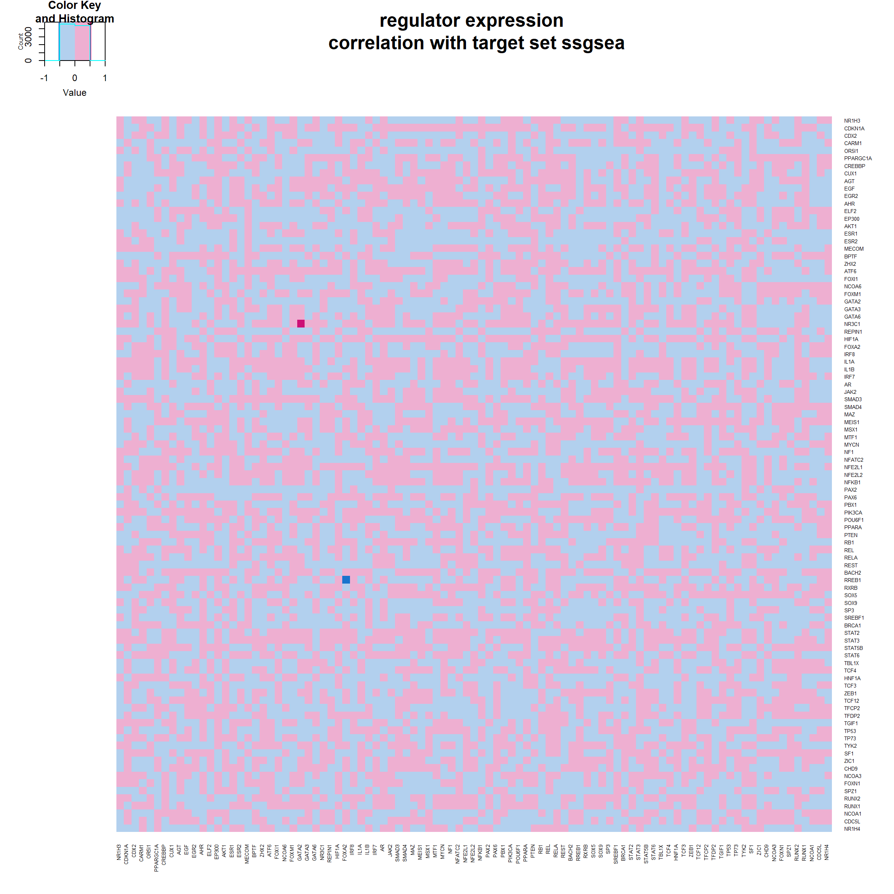
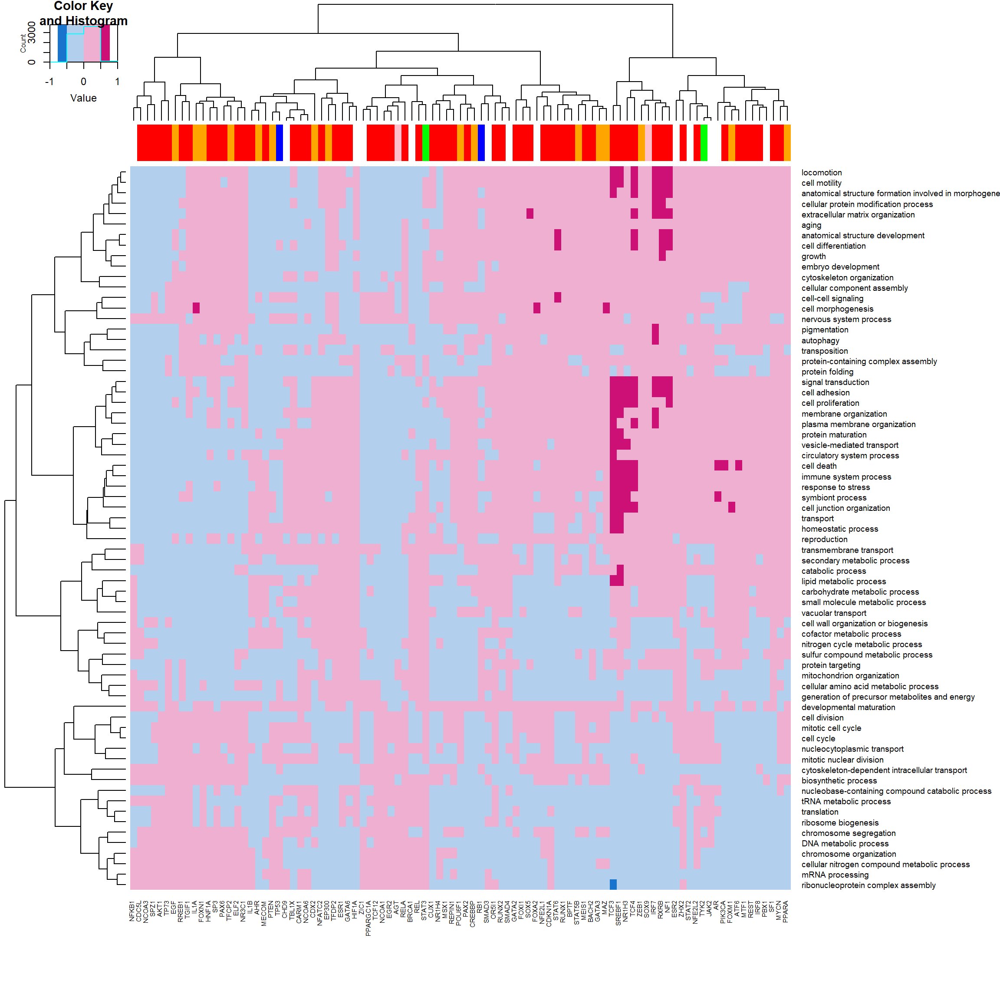

Correlation Analysis
Last updated: 2018-11-30
workflowr checks: (Click a bullet for more information)-
✔ R Markdown file: up-to-date
Great! Since the R Markdown file has been committed to the Git repository, you know the exact version of the code that produced these results.
-
✔ Environment: empty
Great job! The global environment was empty. Objects defined in the global environment can affect the analysis in your R Markdown file in unknown ways. For reproduciblity it’s best to always run the code in an empty environment.
-
✔ Seed:
set.seed(20180723)The command
set.seed(20180723)was run prior to running the code in the R Markdown file. Setting a seed ensures that any results that rely on randomness, e.g. subsampling or permutations, are reproducible. -
✔ Session information: recorded
Great job! Recording the operating system, R version, and package versions is critical for reproducibility.
-
Great! You are using Git for version control. Tracking code development and connecting the code version to the results is critical for reproducibility. The version displayed above was the version of the Git repository at the time these results were generated.✔ Repository version: 8ae8c0f
Note that you need to be careful to ensure that all relevant files for the analysis have been committed to Git prior to generating the results (you can usewflow_publishorwflow_git_commit). workflowr only checks the R Markdown file, but you know if there are other scripts or data files that it depends on. Below is the status of the Git repository when the results were generated:
Note that any generated files, e.g. HTML, png, CSS, etc., are not included in this status report because it is ok for generated content to have uncommitted changes.Ignored files: Ignored: .Rhistory Ignored: analysis/figure/ Ignored: data/.DS_Store Untracked files: Untracked: analysis/goslim_sub_old_order.pdf Untracked: data/._.DS_Store Untracked: data/._GSE36133_series_matrix.txt Untracked: data/CCLE/ Untracked: data/GDSC/ Untracked: data/GDSC_CCLE_experiment_cl.Rdata Untracked: data/GDSC_CCLE_mutual.Rdata Untracked: data/GSE36133_series_matrix.txt Untracked: data/Gene_regulators/ Untracked: data/ccle_regsva_regulator.Rdata Untracked: data/cnv_result.Rdata Untracked: data/cpgsva_z_col.Rdata Untracked: data/dge.RData Untracked: data/drug_totest.Rdata Untracked: data/dry_regulator_gene_set.Rdata Untracked: data/fry_regulator_gene_set_lung.Rdata Untracked: data/fry_regulator_gene_set_skin.Rdata Untracked: data/fry_result.Rdata Untracked: data/gogsva_z_col.Rdata Untracked: data/goslim_order.Rdata Untracked: data/gosva.Rdata Untracked: data/hggsva_z_col.Rdata Untracked: data/keggsva_z_col.Rdata Untracked: data/lung_common_cl.Rdata Untracked: data/lung_common_cl_pd.Rdata Untracked: data/regsva_new_new_z_col.Rdata Untracked: data/regsva_new_z_col.Rdata Untracked: data/regsva_z_col.Rdata Untracked: data/regsva_z_row.Rdata Untracked: data/regsva_zscore.Rdata Untracked: data/regulator_dge.Rdata Untracked: data/regulator_regulation.Rdata Untracked: data/regulators_5_cl_20_tar.Rdata Untracked: data/selected_cl.Rdata Unstaged changes: Deleted: analysis/about.Rmd Modified: analysis/cnvchange.Rmd Deleted: analysis/drugresponse.Rmd Deleted: analysis/gdsccorr.Rmd Deleted: analysis/license.Rmd Deleted: docs/drugheatmap_goslim.pdf Deleted: docs/drugheatmap_target.pdf Deleted: docs/drugheatmap_target_nodup.pdf Deleted: docs/firstheatmap.pdf Deleted: docs/fourthheatmap.pdf Deleted: docs/gs-hp_1.pdf Deleted: docs/gs-hp_2.pdf Deleted: docs/gs-hp_3.pdf Deleted: docs/secondheatmap.pdf Deleted: docs/thirdheatmap.pdf
Expand here to see past versions:
| File | Version | Author | Date | Message |
|---|---|---|---|---|
| Rmd | 8ae8c0f | bingrus | 2018-11-30 | wflow_publish(“analysis/correlation_analysis.Rmd”) |
| html | f9d2d69 | bingrus | 2018-11-30 | Build site. |
| Rmd | 8f29ac0 | bingrus | 2018-11-30 | wflow_publish(“analysis/correlation_analysis.Rmd”) |
| html | ba86654 | bingrus | 2018-11-30 | Build site. |
| Rmd | 3108ddc | bingrus | 2018-11-30 | wflow_publish(“analysis/correlation_analysis.Rmd”) |
| html | 06b2240 | bingrus | 2018-08-27 | Build site. |
| Rmd | 5f154f3 | bingrus | 2018-08-27 | wflow_publish(“analysis/correlation_analysis.Rmd”) |
| html | b8e04c6 | bingrus | 2018-08-20 | Build site. |
| html | e18ffda | bingrus | 2018-08-20 | Build site. |
| Rmd | ca2b21d | bingrus | 2018-08-20 | wflow_git_commit(“analysis/correlation_analysis.Rmd”) |
| html | 763aeb4 | bingrus | 2018-08-20 | Build site. |
| Rmd | 10c7b44 | bingrus | 2018-08-20 | wflow_publish(“analysis/correlation_analysis.Rmd”) |
| html | 64138e4 | bingrus | 2018-08-20 | Build site. |
| Rmd | f418829 | bingrus | 2018-08-20 | wflow_publish(“analysis/correlation_analysis.Rmd”) |
| html | 3e44254 | bingrus | 2018-08-20 | Build site. |
| Rmd | 2b7366e | bingrus | 2018-08-20 | wflow_git_commit(“analysis/correlation_analysis.Rmd”) |
correlation matrix of all regulator expression
*correlation matrix of regulator expression
correlation of regulator expression with target sets expression (ssgsea scores)
- spearman correlation of regulator expression with single sample gene set enrichment scores of target gene set expression
- order of the regulators(row) and the target gene sets(column) is the same

Correlation of regulator expression with GO slim biological processes expression
- spearman correlation of regulator expression with single sample gene set enrichment scores of GO slim biological processes gene set expression
- the column is colored by regulator classifications
- CNA, red
- CNA, regulator DE, pink
- CNA, target gene set, orange
- NA, white
- regulator DE, blue
- target gene set, green
- CNA, red

Expand here to see past versions of cor3-1.png:
| Version | Author | Date |
|---|---|---|
| ba86654 | bingrus | 2018-11-30 |
Correlation of target gene set expression with GO slim biological processes expression
- spearman correlation of target gene set expression (ssgsea scores) with single sample gene set enrichment scores of GO slim biological processes gene set expression
- the column is colored by regulator classifications
- CNA, red
- CNA, regulator DE, pink
- CNA, target gene set, orange
- NA, white
- regulator DE, blue
- target gene set, green
- CNA, red

Expand here to see past versions of cor4-1.png:
| Version | Author | Date |
|---|---|---|
| ba86654 | bingrus | 2018-11-30 |
Session information
R version 3.5.1 (2018-07-02)
Platform: x86_64-w64-mingw32/x64 (64-bit)
Running under: Windows 10 x64 (build 17134)
Matrix products: default
locale:
[1] LC_COLLATE=Chinese (Simplified)_China.936
[2] LC_CTYPE=Chinese (Simplified)_China.936
[3] LC_MONETARY=Chinese (Simplified)_China.936
[4] LC_NUMERIC=C
[5] LC_TIME=Chinese (Simplified)_China.936
attached base packages:
[1] grid parallel stats4 stats graphics grDevices utils
[8] datasets methods base
other attached packages:
[1] data.table_1.11.8 knitr_1.20 heatmaply_0.15.2
[4] viridis_0.5.1 viridisLite_0.3.0 plotly_4.8.0
[7] gplots_3.0.1 GO.db_3.6.0 GSEABase_1.42.0
[10] graph_1.58.2 GSVA_1.28.0 reshape_0.8.7
[13] ggplot2_3.0.0 GEOquery_2.48.0 annotate_1.58.0
[16] XML_3.98-1.16 org.Hs.eg.db_3.6.0 AnnotationDbi_1.42.1
[19] IRanges_2.14.12 S4Vectors_0.18.3 Biobase_2.40.0
[22] BiocGenerics_0.26.0 limma_3.36.5 htmlwidgets_1.3
loaded via a namespace (and not attached):
[1] colorspace_1.3-2 class_7.3-14 modeltools_0.2-22
[4] mclust_5.4.1 rprojroot_1.3-2 flexmix_2.3-14
[7] bit64_0.9-7 mvtnorm_1.0-8 xml2_1.2.0
[10] codetools_0.2-15 R.methodsS3_1.7.1 robustbase_0.93-3
[13] geneplotter_1.58.0 shinythemes_1.1.1 jsonlite_1.5
[16] workflowr_1.1.1 cluster_2.0.7-1 kernlab_0.9-27
[19] R.oo_1.22.0 shiny_1.1.0 readr_1.1.1
[22] compiler_3.5.1 httr_1.3.1 backports_1.1.2
[25] assertthat_0.2.0 lazyeval_0.2.1 later_0.7.5
[28] htmltools_0.3.6 tools_3.5.1 bindrcpp_0.2.2
[31] gtable_0.2.0 glue_1.3.0 dplyr_0.7.7
[34] Rcpp_0.12.19 trimcluster_0.1-2.1 gdata_2.18.0
[37] iterators_1.0.10 fpc_2.1-11.1 stringr_1.3.1
[40] mime_0.6 gtools_3.8.1 dendextend_1.9.0
[43] DEoptimR_1.0-8 MASS_7.3-50 scales_1.0.0
[46] TSP_1.1-6 hms_0.4.2 promises_1.0.1
[49] RColorBrewer_1.1-2 yaml_2.2.0 memoise_1.1.0
[52] gridExtra_2.3 stringi_1.1.7 RSQLite_2.1.1
[55] gclus_1.3.1 foreach_1.4.4 seriation_1.2-3
[58] caTools_1.17.1.1 rlang_0.2.2 pkgconfig_2.0.2
[61] prabclus_2.2-6 bitops_1.0-6 evaluate_0.12
[64] lattice_0.20-35 purrr_0.2.5 bindr_0.1.1
[67] bit_1.1-14 tidyselect_0.2.5 plyr_1.8.4
[70] magrittr_1.5 R6_2.3.0 DBI_1.0.0
[73] pillar_1.3.0 whisker_0.3-2 withr_2.1.2
[76] RCurl_1.95-4.11 nnet_7.3-12 tibble_1.4.2
[79] crayon_1.3.4 KernSmooth_2.23-15 rmarkdown_1.10
[82] blob_1.1.1 git2r_0.23.0 digest_0.6.18
[85] diptest_0.75-7 webshot_0.5.1 xtable_1.8-3
[88] tidyr_0.8.1 httpuv_1.4.5 R.utils_2.7.0
[91] munsell_0.5.0 registry_0.5 This reproducible R Markdown analysis was created with workflowr 1.1.1